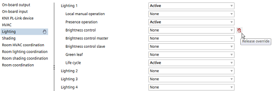

依赖关系
选择I/O或网络外围设备可以激活相应的学科特征。如果您手动覆盖自动激活的学科功能，系统会指示您已手动覆盖自动选择。
Example
环境On-board input > Brightness > X2; 0...10 V激活Lighting > Brightness control > Lighting brightness switch 11.
如果您停用自动设置参数，系统会显示一个手形符号，表明您已覆盖自动选择。规则特征旁边和父选项卡（照明）旁边会显示一个符号。

要释放被覆盖的参数并将其设置回其逻辑值，请单击Release override 图标或从下拉列表中选择建议值。